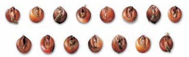
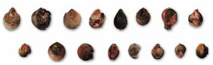
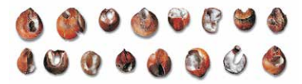
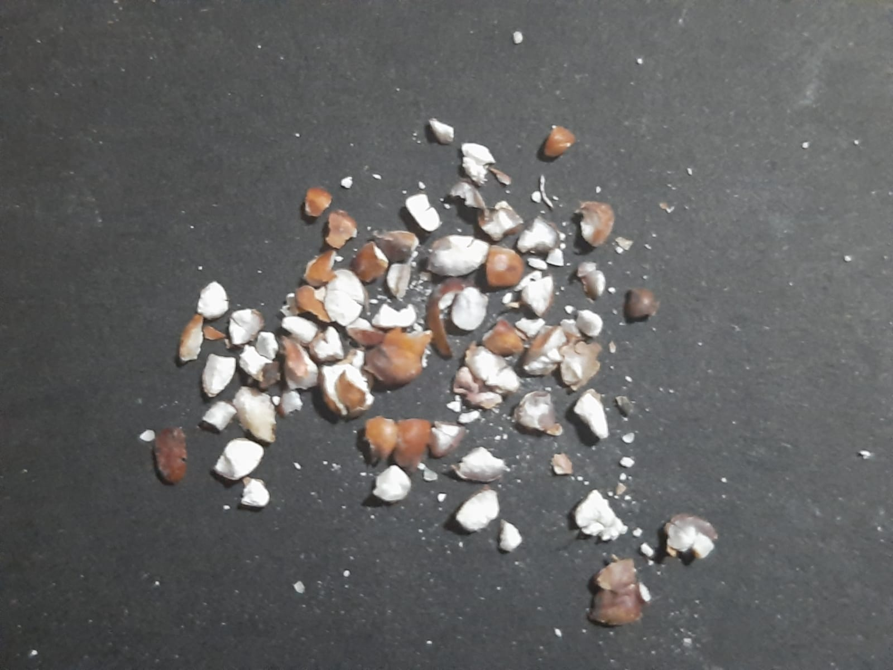
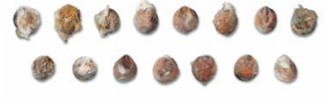

Son aquellos en los que se ha iniciado visiblemente el proceso de germinación. Tal hecho se manifiesta por una ruptura de la cubierta del germen, a través de la cual asoma el brote.
Son aquellos que se desmenuzan cuando se hace una breve presión sabre los mismos, mostrando en su interior un aspecto blanquecino y yesoso.
Son aquellos que presentan perforaciones causadas por el ataque de insectos.
Son aquellos pedazos de granos de sorgo que pasen por una zaranda de agujeros triangualares (triángulos equiláteros) de 1.98mm ± 0.013mm.
Se considera como tal a todo lote que presente una elevada proporción de granos que llevan moho adherido en la mayor parte de su superficie.
